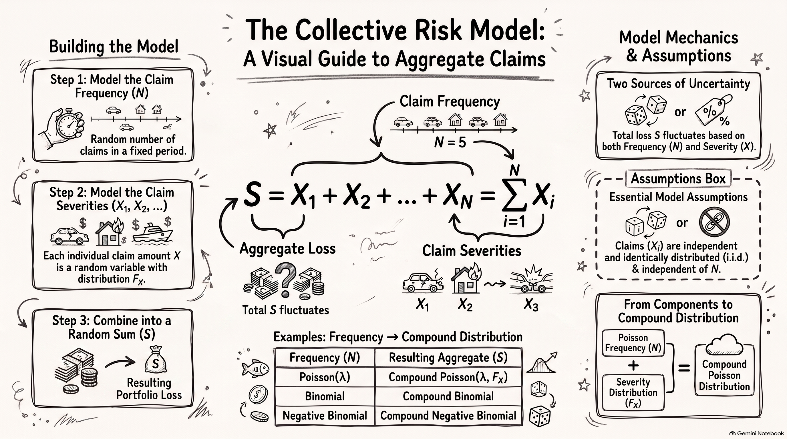
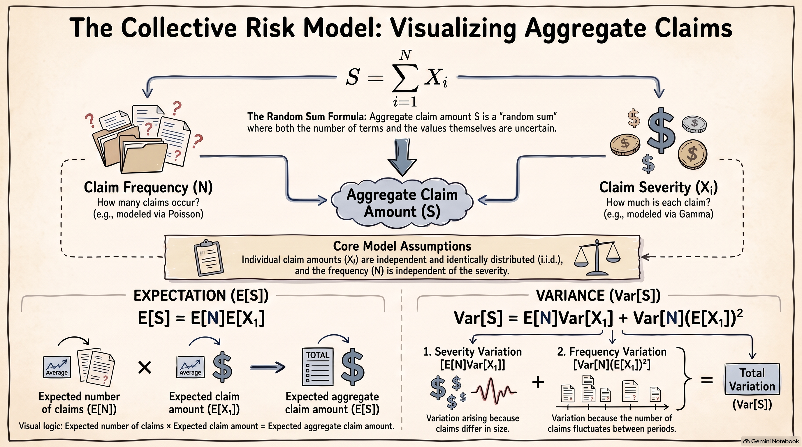

Mathematical models of the total amount of claims from a portfolio of policies over a short period of time are presented in this chapter. These models are referred to as short-term risk models. Two main sources of uncertainty are considered: the number of claims and the amounts of individual claims.
We begin with the collective risk model, which models the aggregate (total) amount of claims from a portfolio of policies over a fixed time interval.
3.1.1 Motivation and actuarial interpretation
Consider an insurance company that provides coverage to a portfolio of policyholders over a fixed period, such as one year. During this period, some policyholders may make claims while others may not. In addition, the amounts of the claims can vary substantially from one claim to another.
From the insurer’s perspective, the total amount that must be paid in claims is therefore uncertain. Even if the insurer knows the characteristics of the portfolio, it does not know in advance:
how many claims will occur during the period; and
how much each individual claim will cost.
For example, suppose an insurer has a portfolio of motor insurance policies. During one year, the portfolio may produce 800 claims, while another year may produce 950 claims. Furthermore, the individual claim amounts may range from relatively small claims to very large claims. Consequently, the total amount of claims can vary considerably from year to year.
The collective risk model separates these two sources of uncertainty. The claim frequency describes how many claims occur, while the claim severity describes the amount of an individual claim. These two components are then combined to obtain a model for the total amount of claims.
This distinction is important in actuarial modelling because the frequency and severity components can have quite different characteristics. For example, the number of claims may be modelled using a discrete probability distribution such as the Poisson distribution, whereas the amount of an individual claim may be modelled using a continuous distribution such as the Gamma, Lognormal, or Pareto distribution.
The collective risk model is therefore useful because it provides a flexible framework for combining a model for the number of claims with a model for the amount of each claim.
3.1.2 Frequency and severity variables
We define the following random variables:
\(N\) represents the number of claims occurring during a fixed time interval;
\(X_i\) denotes the amount of the \(i\)th claim; and
\(S\) denotes the total amount of claims during the same time interval.
The random variable \(N\) is called the claim frequency, while \(X_i\) is called the claim severity.
The claim frequency \(N\) is a discrete random variable taking values in
\[
\{0,1,2,\ldots\}.
\]
For a given value of \(N=n\), there are exactly \(n\) claims during the time interval. The total amount of these claims is therefore
\[
S = X_1 + X_2 + \cdots + X_n.
\]
The individual claim amounts \(X_1,X_2,\ldots\) are random because the amount of a claim is unknown before the claim occurs. We assume that the claim amounts are described by a common distribution function \(F_X\).
It is useful to distinguish clearly between the two sources of randomness:
The aggregate claim amount \(S\) depends on both components. A year with many claims can produce a large aggregate loss even when the individual claims are relatively small. Conversely, a year with relatively few claims can still produce a large aggregate loss if one or more claims are unusually large.
NoteTwo sources of uncertainty
In the collective risk model, the aggregate claim amount is uncertain because of two sources:
the number of claims, represented by \(N\); and
the amounts of individual claims, represented by \(X_1,X_2,\ldots\).
These two sources of uncertainty are combined through the random sum
\[
S = \sum_{i=1}^{N}X_i.
\]
3.1.3 Definition of the aggregate loss
Let \(S\) denote the total amount of claims from a portfolio during a fixed time interval. Conditional on \(N=n\), the aggregate loss is
\[
S = \sum_{i=1}^{n}X_i.
\]
Since the number of claims \(N\) is itself random, the unconditional aggregate loss is represented by the random sum
\[
S = \sum_{i=1}^{N}X_i.
\]
The random variable \(S\) is called the aggregate loss, aggregate claim amount, or total claim amount.
ImportantCollective risk model
The aggregate claim amount is modelled as
\[
S = \sum_{i=1}^{N}X_i,
\]
where \(N\) is the number of claims and \(X_i\) is the amount of the \(i\)th claim.
The number of terms in the sum is therefore random.
An important feature of this definition is that the number of terms in the sum is random. If \(N=0\), there are no claims and therefore
\[
S=0.
\]
If \(N=1\), then
\[
S=X_1,
\]
while if \(N=2\), then
\[
S=X_1+X_2.
\]
More generally, conditional on \(N=n\),
\[
S=\sum_{i=1}^{n}X_i.
\]
Thus, the collective risk model is a random sum model.
3.1.4 The collective risk model
The collective risk model is defined by
\[
S = \sum_{i=1}^{N}X_i,
\]
where \(N\) represents the number of claims and \(X_i\) represents the amount of the \(i\)th claim.

Figure 3.1: Collective Risk Model Visual Guide
The following assumptions are made when deriving the collective risk model:
\(\{X_i\}_{i=1}^{\infty}\) are independent and identically distributed with distribution function \(F_X\).
\(N\) is independent of \(\{X_i\}_{i=1}^{\infty}\).
The first assumption implies that all individual claim amounts have the same distribution and that the amount of one claim does not depend on the amount of another claim.
The second assumption implies that the number of claims is independent of the individual claim amounts. In other words, knowing that a portfolio has produced a large or small number of claims does not provide information about the sizes of those claims.
These assumptions are simplifying assumptions that allow the aggregate claim distribution to be studied using standard probability techniques. They may not always be realistic in practice. For example, claim frequency and claim severity may be related, or claims arising from the same event may not be independent. Nevertheless, the assumptions provide a useful starting point for developing short-term risk models.
WarningAssumptions of the collective risk model
The following assumptions are made:
\(\{X_i\}_{i=1}^{\infty}\) are independent and identically distributed with distribution function \(F_X\).
\(N\) is independent of \(\{X_i\}_{i=1}^{\infty}\).
These assumptions simplify the mathematical analysis of aggregate claims. In practice, they may not always be appropriate. For example, claim frequency and claim severity may be dependent, and claim amounts may not be independent.
Under these assumptions, the distribution of \(S\) is called a compound distribution.
The collective risk model can therefore be viewed as a combination of two probability models:
\[
\boxed{
\text{Claim frequency model}
+
\text{Claim severity model}
\longrightarrow
\text{Aggregate loss model}
}
\]
The choice of the distribution for \(N\) determines the type of compound distribution. Important examples include the following:
Distribution of \(N\)
Distribution of \(S\)
Binomial
Compound Binomial
Poisson
Compound Poisson
Negative binomial
Compound Negative Binomial
These compound distributions form an important part of short-term risk modelling.
NoteNote
The distribution of \(S\) can, in principle, be derived using convolution techniques. However, closed-form expressions for compound distributions generally do not exist. Therefore, we will mainly focus on deriving the moments of \(S\) and studying important special cases of the collective risk model.
The collective risk model provides the foundation for several actuarial applications. Once the aggregate loss distribution has been specified, it can be used to study quantities such as the expected total claims, the variability of total claims, the probability that claims exceed a specified amount, the effect of reinsurance, and premium calculation.
3.2 Conditional Expectation and Variance Formulas
Conditional expectation and conditional variance are useful tools for analysing the collective risk model. In particular, they allow us to calculate the mean and variance of an aggregate loss by conditioning on another random variable.

Figure 3.2: Conditional Expectation and Variance Formulas
The law of total expectation states that
\[
E[E[X\mid Y]] = E[X].
\]
This result allows the expectation of \(X\) to be calculated by first finding the conditional expectation of \(X\) given \(Y\).
The conditional variance of \(X\) given \(Y\) is defined as
The first term represents the average variation of \(X\) within the different values of \(Y\), while the second term represents the variation in the conditional means across the different values of \(Y\).
These formulas will be particularly useful when deriving the moments of the aggregate loss
These formulas allow an unconditional mean or variance to be obtained by first conditioning on another random variable.
Example 3.1 (Conditional claim amounts) Suppose an insurer classifies a portfolio of policyholders into three risk groups: Low, Medium, and High. A policyholder is selected at random, and the three risk groups are equally likely:
\[
P(L)=P(M)=P(H)=\frac{1}{3}.
\]
Depending on the risk group, the policyholder can experience one of two possible claim amounts. The possible claim amounts, in units of THB, are:
Risk group
Possible claim amounts (THB)
Low
\(1\), \(2\)
Medium
\(1\), \(5\)
High
\(1\), \(10\)
Assume that, conditional on the risk group, each of the two claim amounts is equally likely.
Let \(X\) denote the claim amount of the selected policyholder.
Find the distribution of \(X\).
Find \(E[X]\) and \(\operatorname{Var}[X]\).
Use the conditional expectation and conditional variance formulas to verify your results.
Solution
Distribution of \(X\)
The possible values of \(X\) are \(1\), \(2\), \(5\), and \(10\).
For example, the probability of a claim amount of \(1\) is
This agrees with the variance obtained directly from the distribution of \(X\).
NoteInterpretation
The law of total variance decomposes the uncertainty in the claim amount into two components:
\[
\operatorname{Var}[X]
=
\underbrace{E[\operatorname{Var}[X\mid Y]]}_{\text{variation within risk groups}}
+
\underbrace{\operatorname{Var}[E[X\mid Y]]}_{\text{variation between risk groups}}.
\]
The first component represents the average variability of claim amounts within the risk groups. The second component represents the variability in the average claim amounts across the risk groups. In this example, it reflects the differences in average claim amounts among the Low-, Medium-, and High-risk groups.
3.2.1 Application to the collective risk model
The same ideas will be used to analyse the aggregate claim amount
\[
S=\sum_{i=1}^{N}X_i.
\]
By conditioning on the number of claims \(N\), we can first analyse the aggregate claim amount when the number of claims is fixed:
These results will be used in the next section to derive the mean, variance, and higher moments of the collective risk model.
3.3 Moments of the Collective Risk Model
Recall that the aggregate claim amount in the collective risk model is
\[
S=\sum_{i=1}^{N}X_i,
\]
where \(N\) is the number of claims and \(X_i\) is the amount of the \(i\)th claim. We assume that \(\{X_i\}_{i=1}^{\infty}\) are independent and identically distributed and that \(N\) is independent of \(\{X_i\}_{i=1}^{\infty}\).
The moments of \(S\) can be derived by conditioning on \(N\). We first derive general expressions in terms of the moments of \(N\) and \(X\), before considering particular choices for the distribution of \(N\).
The first term represents the variability arising from individual claim amounts, while the second term represents the additional variability arising from the random number of claims.
3.3.3 Third central moment
To derive the coefficient of skewness, we first need the third central moment of \(S\).
Let
\[
\mu_X=E[X_1]=m_1,
\]
and define the second and third central moments of \(X_1\) by
Thus, the first three moments of the collective risk model can be expressed entirely in terms of the corresponding moments of the claim frequency \(N\) and claim severity \(X\).
The collective risk model can be viewed as a random sum:
\[
S=\sum_{i=1}^{N}X_i.
\]
Unlike an ordinary sum, the number of terms is itself random. Conditional on \(N=n\), the aggregate claim amount is the sum of exactly \(n\) individual claim amounts:
\[
S\mid(N=n)=\sum_{i=1}^{n}X_i.
\]
Thus, the collective risk model combines two sources of randomness:
the random number of claims, \(N\); and
the random claim amounts, \(X_1,X_2,\ldots\).
The general moment formulas above show how these two sources of uncertainty combine to determine the distributional characteristics of the aggregate claim amount \(S\).
The next step is to specify a distribution for \(N\). Important special cases arise when \(N\) follows a binomial, Poisson, or negative binomial distribution, leading respectively to the compound binomial, compound Poisson, and compound negative binomial models.
3.3.6 Moment Generating Function of the Collective Risk Model
The random-sum representation also allows us to derive the moment generating function (MGF) of the aggregate claim amount.
Example 3.2 (MGF of the Collective Risk Model) Show that
This result provides a general MGF formula for the collective risk model. Once the MGF of the claim frequency \(N\) and the MGF of the individual claim amount \(X\) are known, the MGF of the aggregate claim amount \(S\) can be obtained by substitution.
3.4 Special Compound Distributions
We now consider important special cases of the collective risk model obtained by specifying the distribution of the claim frequency \(N\).
We begin with the compound Poisson distribution, which is one of the most important models for aggregate claims in short-term insurance.
3.4.1 Compound Poisson Distribution
Suppose that the number of claims follows a Poisson distribution,
\[
N\sim\operatorname{Poisson}(\lambda),
\]
and that \(\{X_i\}_{i=1}^{\infty}\) are independent and identically distributed with distribution function \(F_X\), independently of \(N\). The aggregate claim amount is
\[
S=\sum_{i=1}^{N}X_i.
\]
We say that \(S\) has a compound Poisson distribution with parameters \(\lambda\) and \(F_X\), and write
\[
S\sim\mathcal{CP}(\lambda,F_X).
\]
ImportantCompound Poisson model
The compound Poisson model combines
a Poisson distribution for the number of claims, and
a severity distribution \(F_X\) for the amount of each claim.
The parameter \(\lambda\) represents the expected number of claims during the specified period.
The terminology compound distribution is used similarly for other frequency distributions. For example, if \(N\) has a negative binomial distribution, then \(S\) has a compound negative binomial distribution.
3.4.2 Moments of the Compound Poisson Distribution
Let
\[
m_k=E[X_1^k]
\]
denote the \(k\)th raw moment of the individual claim amount \(X_1\).
For a Poisson random variable,
\[
E[N]=\operatorname{Var}[N]=\lambda
\]
and its third central moment is
\[
E[(N-E[N])^3]=\lambda.
\]
These results can be substituted directly into the general formulas for the collective risk model.
Example 3.3 (Example: Moments of a Compound Poisson Distribution) Let
\[
S\sim\mathcal{CP}(\lambda,F_X).
\]
Show that
\(E[S]=\lambda m_1\);
\(\operatorname{Var}[S]=\lambda m_2\);
\(M_S(t)=\exp\{\lambda(M_X(t)-1)\}\);
the third central moment of \(S\) is \(\lambda m_3\), and hence \[
\operatorname{Sk}[S]
=
\frac{\lambda m_3}{(\lambda m_2)^{3/2}}.
\]
Solution
1. Mean
From the general result for the collective risk model,
The positive coefficient of skewness indicates that the aggregate claim amount is right-skewed. The relatively large value reflects the influence of the heavy-tailed Pareto claim severity distribution.
3.4.4 Simulation of a Compound Poisson Distribution
We can simulate observations from a compound Poisson distribution by first simulating the number of claims and then simulating the corresponding claim amounts.
Suppose
\[
N\sim\operatorname{Poisson}(\lambda)
\]
and
\[
X\sim\operatorname{Pa}(\alpha,\beta).
\]
For each simulated observation, generate \(N\) claim amounts and calculate their sum.
The corresponding sample estimates from the simulation should be reasonably close to these theoretical values, although they will vary from one simulation to another.
Code
mean(totalClaims)
[1] 3.295356
Code
var(totalClaims)
[1] 3.180885
Code
# install.packages("moments") # if requiredlibrary(moments)skewness(totalClaims)
[1] 1.241517
NoteSimulation and theory
Simulation results will not exactly equal the theoretical moments because the simulation is based on a finite number of observations. As the number of simulated observations increases, the sample moments should generally become closer to the corresponding theoretical values.
3.4.5 Additivity of Compound Poisson Distributions
An important property of the compound Poisson distribution is its additivity. The sum of independent compound Poisson random variables is itself a compound Poisson random variable.
Example 3.5 (Example: Additivity) Let \(S_1,\ldots,S_n\) be independent compound Poisson random variables, where
The compound Poisson model is widely used in aggregate loss modelling because it combines a simple and interpretable frequency model with an arbitrary claim severity distribution. It also has particularly simple expressions for its first three cumulants and is closed under addition of independent compound Poisson risks.